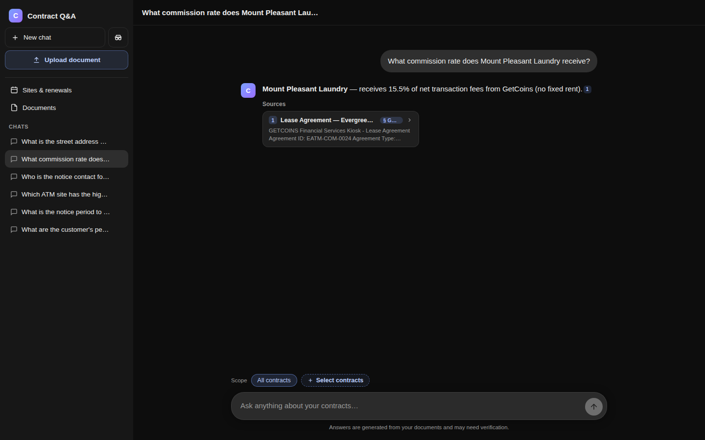

Open full image01 · RAG knowledge system
Turn institutional knowledge into grounded decision support
Support knowledge was spread across years of tickets and recorded calls. Agents often searched or escalated while a customer waited. I framed the target decision as: which prior resolution applies, and which source should the agent verify?
I designed and implemented a local-first retrieval-augmented generation (RAG) workflow that cleaned and enriched source material, generated vector embeddings, combined semantic and exact-term search, and returned the supporting passage with each answer. The linked contract-review RAG recreates the same retrieval pattern as a technical demo.
My role: problem framing, workflow design, implementation, test design, and rollout.
Demo note: This is a static HTML walkthrough; no live backend is running.